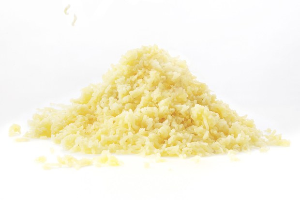

Starchy potatoes like Russets are the classic and best choice for mashed potatoes. Their high starch content guarantees a light, fluffy result that easily soaks up butter and cream. Using low-starch, waxy potatoes such as fingerlings or red-skinned potatoes will result in a mash that's gummy.
2.cut the potatoes evenly
For classic Thanksgiving potatoes, you'll want to peel them first. Start by peeling one potato, cutting it into large, even chunks and placing the chunks directly into a bowl of cold water. Then continue with the next potato. Placing potatoes directly into the water will keep them from browning and rinse off some excess starch.
3.boil potatoes starting with cold water
Drain the chopped potatoes and then transfer to a large pot and cover them with fresh cold water. Bringing your potatoes to a boil with the water rather than adding them to already boiling water will ensure they cook evenly—this is also why you want evenly chopped potatoes: so that a small chunk doesn't overcook while you're waiting for a larger one to be done.

5.Add butter and milk or cream
However, for maximum absorption—and so you don't cool down the potatoes too quickly—you'll want to heat up the milk and cream. Don't bring it to a boil, just heat it until it's hot to the touch or you start to see steam rising from the pot. Feel free to toss in a few fresh thyme sprigs, garlic cloves, or bay leaves to infuse the milk while it warms up—just be sure to leave them behind in the pot when you pour the milk into the potatoes. If you want to add tang, swap out some of the milk for buttermilk, sour cream, or full-fat Greek yogurt. Since they'll curdle when heated, these can be added cold.
6.Reheat the right way
Yes, you can make mashed potatoes ahead of time. The challenge is reheating them while keeping them luscious. Potatoes continue to absorb moisture as they sit, so former food editor Katherine Sacks recommends keeping some of the milk you're putting in the mash to the side to use when you reheat it. "Make the mashed potatoes a bit drier then you want them to be. When you're ready to reheat them, simmer the remaining milk in a pot, stir in the mash, cover and warm over low heat."
CONTACT
Fan? Drop a note!
Chicago, US
Phone: +00 991561234
Email: legal@foodelico.com

 Kshitiz Goel
Kshitiz Goel